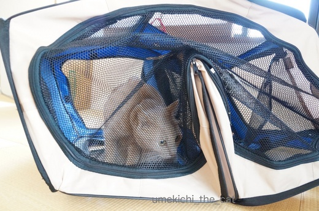
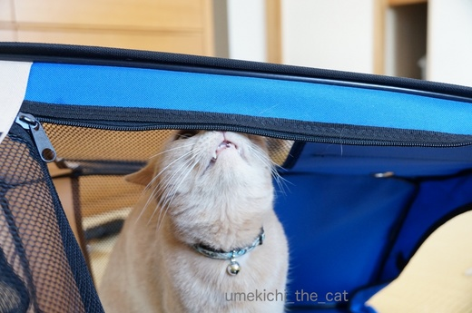
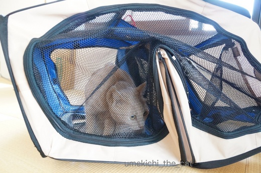
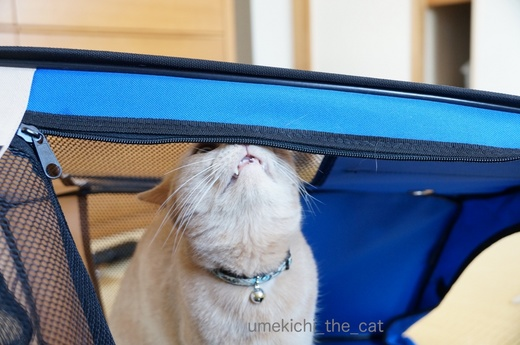

常設決定！ [梅吉]
〜カレンダーコンテストの梅吉の写真に投票していただいた皆様！
投票したかったけど押せなかった〜の皆様！お心遣い本当にありがとうございましたm(_ _)m〜
手入れをして仕舞おうと思っていたサークル、本当に気に入ってしまいました・・・涙

形が変形してたって倒れてたって気にしな〜い！
むしろ目新しい趣向に楽しそうに絡んできます。

![[猫]](https://blog.ss-blog.jp/_images_e/101.gif) のれんはなくてもええで。
のれんはなくてもええで。
キバを出しながらニオイのチェック。

ブサ顔ですが満足そうww

ぐぎぎぎぎぎぎ〜っとマーキング。

楽しくて真剣な時ほどコワイ顔になるのは梅吉だけなんでしょうか！？
もう仕舞うの諦めました。あははははははは・・・・・はぁ〜![[もうやだ～（悲しい顔）]](https://blog.ss-blog.jp/_images_e/143.gif)
このサークル、拭いて風を当てる他にもう一つ手をかけたいことがありました。
マジックテープで止めるようになっていた本体と底。
梅吉がマジックテープを剥がしてイリュージョン脱走するのでガムテープで止めていたら・・・
べっとべとやん！
そのべとべとを取るべく色々ネットで調べたらハンドクリームが良いとのこと。
やって見たら本当に取れるんですね〜。びっくりです。
 ↑ガブッと一押し↑
↑ガブッと一押し↑
zombiekongさんから素敵なお誘いをいただいたので梅吉も参加することに！
zombiekongさんから素敵な画像データをたくさん送っていただきました。
その中の一枚、たこ焼き屋ダンゴ君。角刈りっぽい頭がチョーウケる(≧艸≦)
私はこれに梅吉の画像を加えたいと思っています＾＾
画像加工ってあまりやったことはないですが上手くできるかなぁ。
フォトショは持っていないのでMacのプレビュー機能と
フリーの加工ソフトで頑張ってみます！！
ちなみに今のところ考えているのは
この辺りの画像を使おうと思っています。
作業が遅いからいつになるかな・・・・
でもとっても楽しみ。zombiekongさんありがとうございました！！
投票したかったけど押せなかった〜の皆様！お心遣い本当にありがとうございましたm(_ _)m〜
手入れをして仕舞おうと思っていたサークル、本当に気に入ってしまいました・・・涙

形が変形してたって倒れてたって気にしな〜い！
むしろ目新しい趣向に楽しそうに絡んできます。

キバを出しながらニオイのチェック。

ブサ顔ですが満足そうww

ぐぎぎぎぎぎぎ〜っとマーキング。

楽しくて真剣な時ほどコワイ顔になるのは梅吉だけなんでしょうか！？
もう仕舞うの諦めました。あははははははは・・・・・はぁ〜
このサークル、拭いて風を当てる他にもう一つ手をかけたいことがありました。
マジックテープで止めるようになっていた本体と底。
梅吉がマジックテープを剥がしてイリュージョン脱走するのでガムテープで止めていたら・・・
べっとべとやん！
そのべとべとを取るべく色々ネットで調べたらハンドクリームが良いとのこと。
やって見たら本当に取れるんですね〜。びっくりです。
zombiekongさんから素敵なお誘いをいただいたので梅吉も参加することに！
zombiekongさんから素敵な画像データをたくさん送っていただきました。
その中の一枚、たこ焼き屋ダンゴ君。角刈りっぽい頭がチョーウケる(≧艸≦)
私はこれに梅吉の画像を加えたいと思っています＾＾
画像加工ってあまりやったことはないですが上手くできるかなぁ。
フォトショは持っていないのでMacのプレビュー機能と
フリーの加工ソフトで頑張ってみます！！
ちなみに今のところ考えているのは
この辺りの画像を使おうと思っています。
作業が遅いからいつになるかな・・・・
でもとっても楽しみ。zombiekongさんありがとうございました！！

カフェオレ色の梅吉

梅吉 2023年8月10日 永眠


梅吉と出会った譲渡会

犬猫の理由なき殺処分ゼロ
妄想広告
UMEKICHI 光

爆発的に早い！
時々攻撃的！
Thanks to Mr.Boss365
爆発的に早い！
時々攻撃的！
Thanks to Mr.Boss365

梅吉さんだけじゃないですよ～
うちはインコちゃんだけど、同じように怖い顔になります。
初めて見たときは、なんだこのインコの目は～～！！と
思っちゃうくらい怖い顔でした(´∀｀)
ハンドクリーム、なるほど！
家もさっそく使ってみたいと思います☆彡
by muku (2017-06-16 17:06)
いろいろな形に変わるサークルは
恰好の遊び場になりそうです(#^.^#)
我が家もそろそろ大きくなってきたので
最初に来た時に使っていたソフトクレートを
片づけようと動かしたら中に入って
遊んでいるのでなかなか片づけられません(;^_^A
by きぃ (2017-06-16 20:02)
気に入っている顔付きですね～たこ焼姿可愛い～
by みぃにゃん (2017-06-16 20:18)
お猫様が気に入ったら片付けられない・・・我が家の万年コタツと同じですね？！^^;
他にもテントとか大きいダンボールとか小さいダンボールとか、どんどん常設が増えて足の踏み場がありません(ーー;)
ウチのも梅吉さんと同じ真剣な顔でゴリゴリ柱に顔をこすりつけます。
心配せんでも家中がなわばりやのにね～^^
たこ焼き屋のおっちゃん、ねじりハチマキ似合ってる～♪
by ゆきち (2017-06-16 21:00)
角刈り（笑）梅吉くんも角刈り？
楽しみですね（笑）
自分のものでしょうにマーキングするのですね。
慎重ですね。
by kiki (2017-06-16 21:06)
梅吉さんの秘密基地になったのでしょうか。
（「秘密」じゃないですね。^^;）
角刈りたこ焼き屋ダンゴさん、決まってます！
by yes_hama (2017-06-16 22:02)
優しいおかーさん梅吉さんのためなら我慢するのね。
ハンドクリームは良い情報です。試してみます。
そしてたこ焼きだったらやっばり、なにわの梅吉さん黙ってませんね。
ダンゴに指導ヨロシクお願いします。
by zombiekong (2017-06-16 22:15)
梅吉さん、すっかりお気に入りですね～♪
牙を見せたり、目を細めたり、グギギとマーキングしたり？さっすが一味違いますね＾＾
たこ焼き屋、ダンゴくん、角刈り？素敵～！
画像加工って‥ぜんぜん‥わからないんですけど＾＾；
by sana (2017-06-16 23:19)
お気に入りなんですね～
可愛いなぁ(o^^o)♪
昔、うちにも似たようなのあったけど
大破しましたｗｗｗ
by sumi-cyan (2017-06-17 01:20)
わはは〜(^m^) そうして、梅吉さんは、サークル破壊職人になられるのですね♪
そうなんですよぉ･･･私も、極楽猫カレンダーにポチできないのです(+_;)
でも、梅吉さんのイケメン顔、拝見してきましたよ(^^)v
たこ焼き猫･･･梅吉さん、似合いそうだわ♡
by のらん (2017-06-17 08:04)
片付けようとすると遊びたくなったり、遊んで欲しいと買ってきた物には興味なかったり。この、気まぐれ猫ちゃんめ！
たこ焼き屋のダンゴ君と梅吉君がどう絡んでくるのか楽しみです(*´︶`*)❤
梅吉君がダンゴ君にあんなことやこんなことを…あらっ！
by BillK-ko (2017-06-17 12:07)
アウトドア？ボーイスカウト気分？うるうるした瞳に、お気に入り感が・・・！
by Ginger (2017-06-17 15:04)
閉じ込められると出たくて破壊しちゃうのに～。
今度は気に行っちゃったのね。
常設してもらえてよかったね(^-^)
ダンゴくんと梅吉くんのコラボ！楽しみにしてるにゃ♪
たこ焼き食べたいっ！美味しいやつｗ
by emi (2017-06-17 15:52)
梅吉さん、サークル常設ですって♪( ´▽｀)
頑張ってマーキングした甲斐がありましたねぇ*\(^o^)/*
昔はイリュージョンで出てたのに、入らなくても良くなると入りたがる！
猫様、あるあるですねぇ(⌒-⌒; )
by ニッキー (2017-06-18 14:06)
mukuさん＞インコの怖い顔って独特で面白くて笑っちゃいますよね〜。
あの据わった目が好き〜（・・・と昔飼っていたインコを思い出してます＾＾）
きぃさん＞梅吉が毎日頑張って変形、上下逆、横向き斜め向き・・・
と斬新な形を編み出してくれています・・・・^^;
他の方のコメントで「破壊されました」と見て「うちは大丈夫！」
と思っていましたが大丈夫じゃないかも〜Σ(ﾟ◇ﾟ；)
みぃにゃんさん＞朝な夕なに入り浸ってます。
でも不思議と眠たくなると出てきてベッドに移動するんですよね。
遊び場所！と思って気に入っているのかなぁ・・・
ゆきちさん＞万年コタツならぬ、万年サークルとなりました^^;
でもちっともサークル本来の使い方はしてくれませぬ。
中に入っている時入り口のチャックを閉めたら「わーわーぎゃーぎゃー」。
もしもの時使おうと思っていましたが役立たないかも(=_=;)
なわばりマーキングのゴリゴリ、足にされるときゅ〜んとなりますよね＾＾
kikiさん＞角刈りも良いですね〜(≧▽≦)
本当はハチマキもしたかったのですが私の技量ではどうにもなりませんでした^^;
by ちぃ (2017-06-18 15:02)
yes_hamaさん＞公然の秘密の秘密基地です！
だれにも言わんといて〜(≧艸≦)
ダンゴさんの角刈り決まってますよね〜。
zombiekongさんは角刈りのつもりじゃなかったのかもしれませんが^^;
zombiekongさん＞優しいだなんて〜(≧艸≦)
梅吉が楽しそうなのはよいことだ！という気持ちと
ブログネタをよろしくね・・・という打算的な気持ちと・・・^^;
ダンゴさんは年上なので梅吉は弟子入りして見ましたよ！！
他のパレードさんか猫さんが楽しみですヾ(*ΦωΦ)ﾉ
sanaさん＞な〜にが気に入ったのかわかりませんが各パーツ
遊び物としていろんな方法で楽しんでいます＾＾
私が中に入ると（！！）心配そうに見に来るんですよ〜。
完全に「わしのもの」のようです。
sumi-cyanさん＞うちは大丈夫！と思っていましたが
大破・・・自信なくなってきました (^▽^;)
のらんさん＞のらんさんも破壊の予言を・・・
このままでは肝心な時に役立たないサークルになってしまいそうΣ(ﾟ◇ﾟ；)
カレンダーの応募画像ご覧いただけたのですね＾＾
変顔梅吉の滅多に見せないきゅるん顔で姑息に採用を狙って見ました(^_－)☆
by ちぃ (2017-06-18 15:14)
BillK-koさん＞何がツボに入るのか読めないところがねこ様ですよね(^▽^;)
このサークルを出した時には
「ふふふ・・梅吉はきっとブロフネタを提供してくれる・・・」と
下心ありありで予感は的中したのですが、仕舞えなくなるとは・・・泣
梅吉、ダンゴ君に絡んでみました。
でも年上の方なのでちゃんと敬ってますよ！
梅吉は体育会系なので（そうなのかっ！）そのへんはビシッとしているのです(^o^)
Gingerさん＞梅吉、ボーイスカウト活動とかめっちゃ張り切りそう(*>艸<)
募金活動とかは真剣にやらないけれど、野外活動はまかしとけ〜みたいな！！
テントみたいなサークルはその心に火をつけたのかしら＾＾
emiさん＞泣く泣く常設にしました〜。
でもね、仕舞う隙は伺ってますよ・・・・ふふふふ(ΦωΦ)
たこ焼きは自分で焼いて熱々を食べるのが一番ですよ〜＾＾
って、関西以外のお家ではたこ焼きプレート持っていないか・・・(*>艸<)
ニッキーさん＞梅吉には「朗報！」という感じだったのか
「しまうなんてありえへん！」と思っていたのか・・・^^;
毎日一生懸命変形させてちょっとサークルが歪んできた気も・・・
イリュージョンしなくても簡易脱出口が新たにできそうですΣ(ﾟ◇ﾟ；)
by ちぃ (2017-06-18 15:36)
スマホのアプリだと
気軽に写真を切り出して、合成できるものがありますよね。
梅吉君がどんなふうに変身するのか楽しみだわ♪
by リュカ (2017-06-19 10:07)